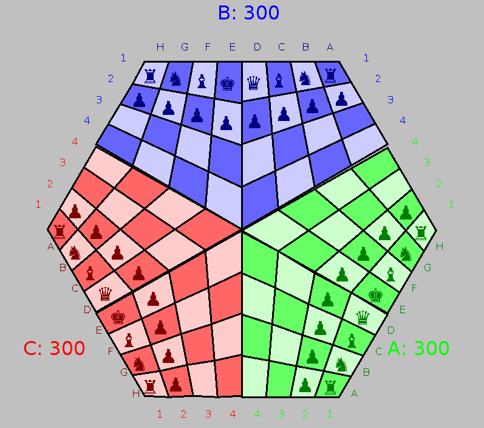

Project
- Due: week 12
- Submit via cssubmit.
- The project contributes 20% to your final grade, and should be done in pairs.
Three Chess

The project will require you to research, implement and validate artifical intelligence for the board game ThreeChess.
ThreeChess is a variation of chess played on a special board between three players, with the colours Blue, Green and Red.
Each player takes turns moving their pieces, where the available moves depend on the type of piece.
If your piece lands on a square occupied by an opponent's piece, the opponent's piece is removed from the board (captured)
and the goal is to take one of your opponents' King.
When a King is taken the game ends, and the person who took the King is the winner, the person who lost the King is the loser,
and the third player neither wins nor loses.
Rules
The offical rules, and basic hints are available here,
as well as an online game you can play (it seems a bit buggy). The project will work with a variation of the rules described below:
- Players takes turns moving pieces. Blue always goes first, followed by Green, and the Red.
- The board is set up as in the picture.
- The piece moves are as follows:
- ♚ King
- The King may move one square in any direction, including diagonally.
If the King and the Rook are in their original position, and there are no pieces in between them,
the King may move two squares towards the Rook, and the rook is moved to the square on the outside of the King.
This is called castling. Unlike normal chess you can castle across check,
and it does not matter if the King and the Rook have moved before.
- ♛ Queen
- The Queen may move in a straight line in any direction (including diagonally),
as many squares as are free but may not move through another piece.
- ♜ Rook
- The Rook may move in a straight line forwards, backwards, left or right, but not diagonally,
and may not move through another piece.
- ♝ Bishop
- The Bishop may move in a straight line in any diagonal direction,
but may not move through another piece.
- ♞ Knight
- The Knight moves in a L-shape (one square forwards, backwards left or right,
and then 2 squares in any perpendicular direction). The Knight may jump over other pieces.
- ♟ Pawn
- The Pawn may only move 1 square forward at a time, with the following exceptions:
one its first move, it may move two squares forwards; to take a piece it must move diagonally forwards;
and if it reaches the back rank, it is automatically promoted to a Queen
(unlike normal chess, where the player can choose which piece to promote to).
There is en passant in this version of the game
- If your piece lands on an opponents piece that piece is taken or captured.
This means it is removed from the board.
- You may not capture your own piece.
- The game ends when a King is captured. In the case, the person who took the King is the winner (+1),
the person who lost the King is the loser (-1), and the thrid player neither wins nor loses (0).
- When a piece is threatening an opponent's King, the King is said to be in check.
Unlike normal chess, you can move into check, and are not required to take evasive action if you are in check.
The King must be taken for the game to end, and it is not enough to trap a King in checkmate.
- It is possible for a game to reach a position where the same position is repeated and no player can force the end of the game.
In this case the game is a draw.
- In a time version of the game, each player is given an amount of time that accumulates while they are considering their move
(i.e. from the time their opponent to the right completes a move, until they move a piece).
Once this time reaches a limit, the player who ran out of time is the loser. in this case,
the opponent with the most remaining pieces, and who took the most pieces is the winner.
For this project you should in pairs. You will be required to research, implement and validate agents to play ThreeChess.
You will be provided with a Java interface to implement an agent, some very basic agents, and a basic class to run a game.
These will be made available on github and will be regularly updated.
Files are provided for your agents to use including:
- Board.java which gives a representation of the current state of the game
- ThreeChessDisplay.java which generates a JFrame displaying the board.
- ThreeChess which contains methods for running games and tournaments between different agents.
- Agent.java which is an abstract class that you must subclass and provide logic for the agent to
play moves given a board position. To make running tournaments easier, your agent must be in the package threeChess.agents,
it must have the name Agent########.java (where the ahshes are your student number), and it must have a 0 parameter constructror.
There are a range of other classes as well, but those are the important one.
To clone the repository use git clone https://github.com/drtnf/threeChess.git
To compile the files, in the root directory use javac -d bin src/threeChess/\*.java src src/threeChess/agents/\*.java
To run a basic game use java -cp bin/ threeChess.ThreeChess
These files will be updated regularly, so it is recommended that you regularly pull from the repository.
Students are also welcome to push changes, when they find bugs or potential improvements.
The documentation will be available here.
Submission
You will be required to submit a research report (1500-2000 words), and Java source code for one or two agents (pairs must submit two agent).
The report should include:
- A Literature review of suitable techniques: 20%
- Description and Rationale of selected technique: 20%
- Description of validation tests and metrics: 15%
- Analysis of agent performance: 15%
The source code will also be assessed on:
- The quality of the code including formatting and selection of data structures: 15%
- The performance of the agent, including in the end of semester tournament: 15%
The criterion for the assessment is found here.
There will be a tournament in week 12, with the rules finalised closer to that date.
The tournament will involve agents playing a series of games, with high scoring agents awarded bonus marks.
For your submission include
- A pdf version of your report.
- A zip of all the source files, confuguration files, and instructions to execute your code (not a RAR!)
- a single source file Agent########.java (i.e. Agent[your student number]) for the agent you would like to compete in the tournament. This should not be zipped. The Agent file should be part of the threeChess.agents package.
Getting started
There are many references for Chess AI and perfect information deterministic turn based board games in general.
ThreeChess adds the complication of a third player.
This makes techniques such as minimax and alpha-beta pruning less practical,
since it assumes the worst of your opponents, and it is unlikely both opponents will target you
(and if they do, there's not much you can doi about it.)
The first step in designing a AI for the game is to play some games yourself and identify useful tactics.
Once you have an idea of what makes a good position in the game, you can start work on an evaluation function,
to give an approximate utility to a board position. You can then use that in a minimax search,
a Monte Carlo tree search or a sequential decision problem.
Some interesting references are included below, and we will add to this throughout semester.